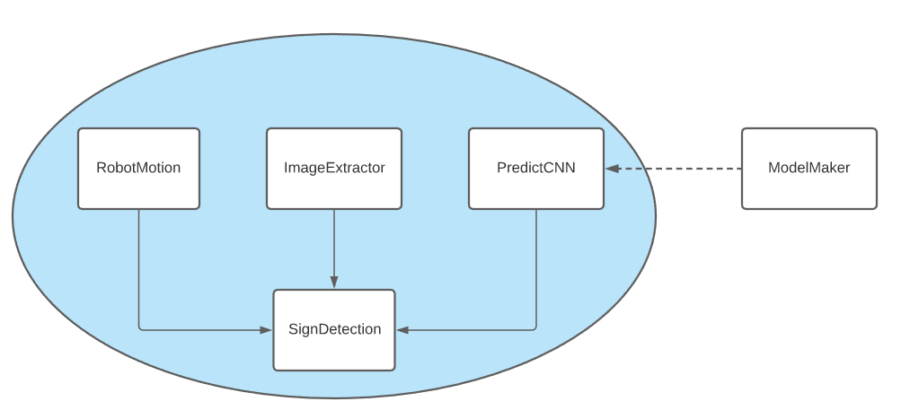
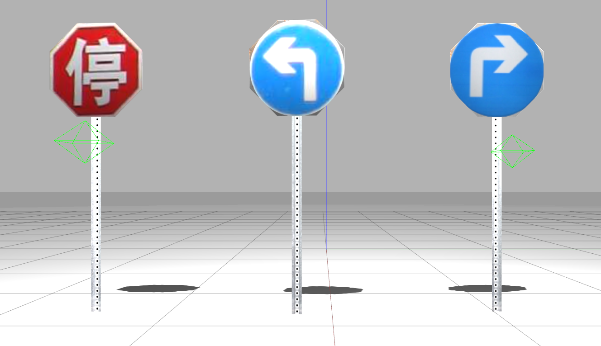
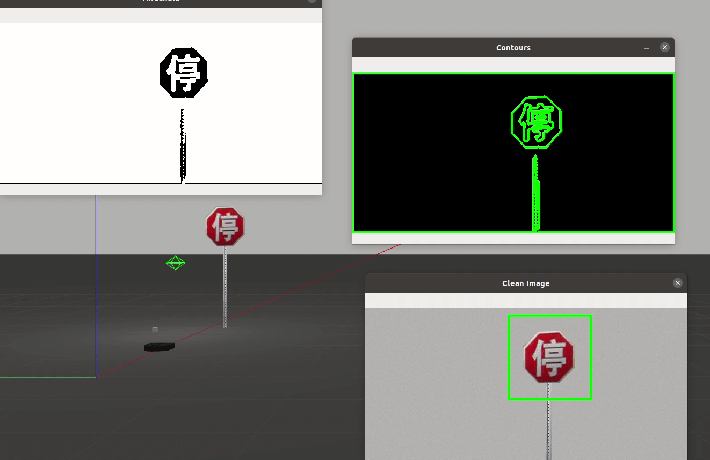

Implementation
Description and Goals
For the final Computational Robotics Project, our team decided to build off of our computer vision project and we implemented a simulated sign recognition program. The following steps show a brief outline of what we did:- Created a custom gazebo world containing road signs from the selected dataset
- Used the simulated neato camera feed to extract the potential signs
- Used a CNN to identify the type of road sign
- Had the neato respond to the type of road sign with the appropriate behavior

System Architecture
Our SignDetection class includes instances of 3 other classes: RobotMotion, ImageExtractor, and PredictCNN. PredictCNN relies on a pre-trained and saved convulutional neural net. Within SignDetection, ImageExtractor finds a region of interest (ROI), PredictCNN classifies it, and RobotMotion controls the behavior of the simulated Neato. We designed a Gazebo world with a handful of road signs for the Neato to react to based on what signs appear in its camera feed. Gazebo World
The Gazebo world consists of 3 types of sign models with images taken directly from the dataset. We had never created custom Gazebo models before, and our initial plan was to create models from scratch in Solidworks. We successfully created a mesh in Solidworks and exported it as an SDF file, but it proved to be more complicated than expected to apply a texture from scratch to put a road sign on the mesh. For the sake of this project scope, we pivoted to using the built in Stop Sign model by editing the model textures in Adobe Illustrator. Here are the models we ultimately used:
Image Extraction
To identify the region of the video that is most likely to contain a sign, we followed the following steps:- Crop the video to elimate the bottom 3rd of the camera feed
- Convert it to grayscale
- Apply an adaptive filter using OpenCVs
adaptiveThresholdto generate a binary feed - Generate contours from the binary feed
- From each contour object, approximate the area and number of vertices
- Filter out contours with areas > 20000 and < 1000. This elimates noise from tiny contours and also ignores any contours that are the full perimeter of the camera feed
- For the remainging contours, any shapes with more than 4 vertices is considered a potential sign
- Finally, the largest remaining contour is considered the ROI (region of interest) for that frame in the video feed and is saved

Sign Classification
To classify the region of interest image found duing image extraction, we built off of a simple convolutional neural net that we built during the prior computer vision projectOur classifier was trained on the publicly available portion of the Chinese Traffic Sign Recognition database [1]
Robot Motion
For each type of sign, the Neato responds accordingly. The stop sign causes the Neato to pause for 2 seconds before it resumes driving forward. Each turn sign causes the Neato to pivot 90 degrees in the indicated direction.One of the challenges associated with reacting to video stream object classification is the way that multiple frames in the video may contain a sign that triggers the same behavior. For example, if the algorithm is processing one frame every second as the Neato approaches a stop sign, we do not want the Neato to respond repeatedly to every frame where a stop sign is identified. To account for this, we added several constraints so that the Neato only responds under specific conditions:
- The sign must be within 50 pixels of the top of the video stream, which means the Neato is quite close to the sign
- A new_sign flag must be tripped indicating that the sign in the video stream has not been acted on already. Right now this means the Neato can only respond to multiple signs in a row if they are different. The new_sign flag could be combined with the "location in frame" constraint above to make this possible in the future.
- A sign must be classified with >99% confidence before the Neato acts on it, otherwise sometimes unwanted objects in the image accidentally trip the Neato to respond.
===========================
[1] https://www.kaggle.com/dmitryyemelyanov/chinese-traffic-signs The dataset is a converted version of publicly available Chinese Traffic Sign Recognition Database. This work is supported by National Nature Science Foundation of China(NSFC) Grant 61271306 Credits: LinLin Huang,Prof.Ph.D School of Electronic and Information Engingeering, Beijing Jiaotong University, Beijing 100044,China Email: huangll@bjtu.edu.cn All images originally collected by camera under nature scenes or from BAIDU Street View